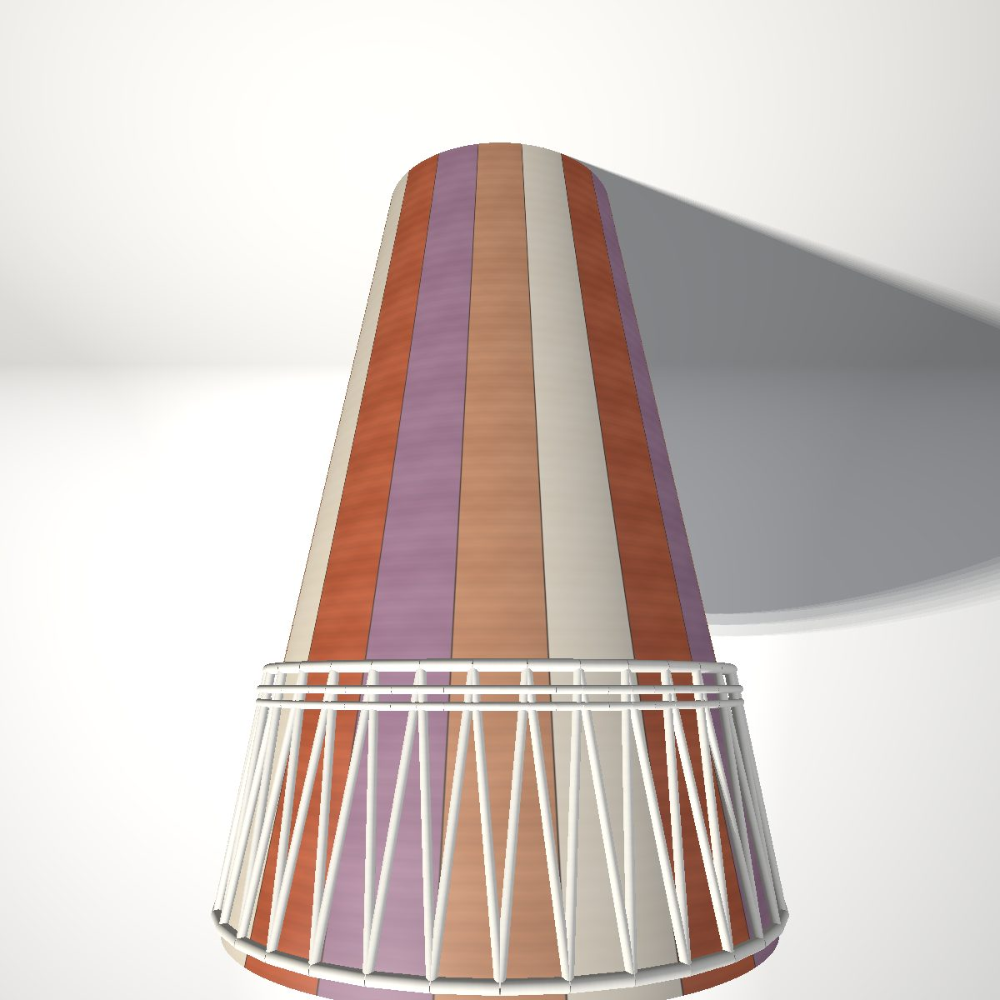
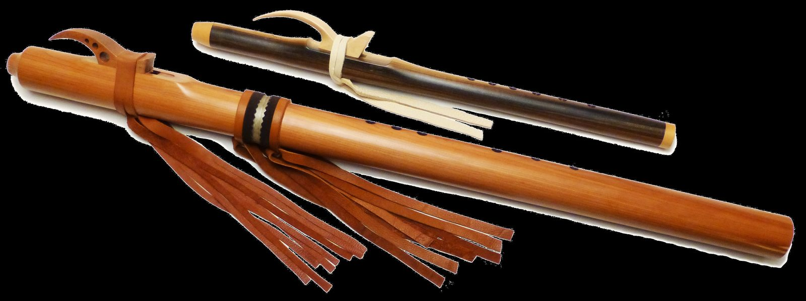

percussion
Ashiko Drum-Building Workshop

woodwind
A curated, open look at original and traditional musical-instrument designs — engineering packets, acoustic models, and build documentation. A growing public preview, eventually living at heiferzephyr.com.

